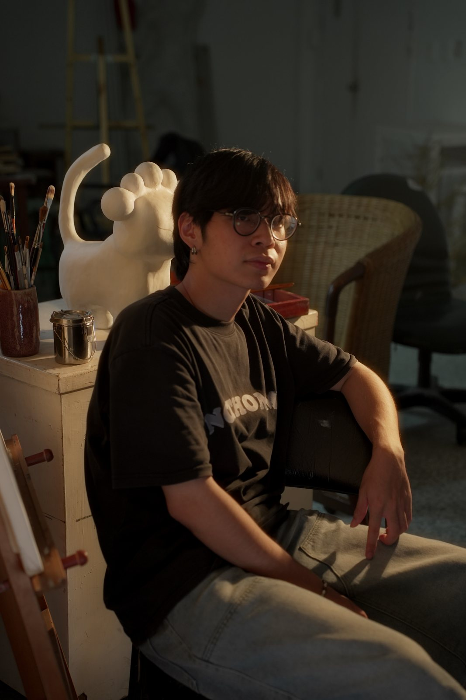

© CHI-SENG LAM
林志城
2002年出生於澳門澳門半島，2026年於國立台灣彰化師範大學美術系修業中。創作媒材多以現成物、電子設備，引用物品本身的特性作延伸，探索有形的物件與無形的精神狀態的關係。以實物借代來比喻無形的抽象感覺，主題多以探討來自生活中無形的內心感受與狀態的，如聽覺感受、回憶、無形的壓力、無形的束縛。
聯展：
2025 產物，白沙藝術中心，彰化、2025 間歇下的光，國立彰化師範大學，厚花園 & 1-7空間、聯覺體，凱昇藝術中心，台中、2024 當代低能兒，白沙藝術中心，彰化、2022 初始設定，白沙藝術中心，彰化